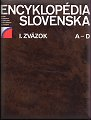

Diela vydané v našom ústave
Vlastivedný slovník obcí na Slovensku

— trojzväzkový vlastivedný slovník; hlavní redaktori Miroslav Kropilák a Milan Strhan, výkonný redaktor Ján Hudák. Vyšiel vo vydavateľstve SAV Veda v rokoch 1977 – 78. Dodnes najkomplexnejšia miestopisná syntéza o jednotlivých sídelných lokalitách Slovenska (I. zväzok: písmená A – J; II. zväzok: písmená K – R; III. zväzok: písmená S – Ž s miestnym a menným registrom). Zahŕňa najdôležitejšie informácie o 3 155 obciach na Slovensku (podľa stavu k 1. januáru 1965 s prihliadnutím na zmeny do konca roka 1970): staré a inojazyčné názvy obce a obyvateľské mená (vrátane údaja o najstaršom písomne doloženom názve obce), administratívne začlenenie, časti obce, počty obyvateľov (od sčítania 1869), prírodne pomery (najvyššia a najnižšia nadmorská výška, poloha, povrch, podnebie, vodstvo, pôda, flóra, fauna, rezervácie), dejiny, kultúra (školstvo, divadlá, hudobný, literárny a výtvarný život, výskum a veda, tlačiarne, časopisy, pamiatky, národopis, osobnosti), zdravotníctvo, šport a turistika, literatúra o obci.
Encyklopédia Slovenska

— vlastivedná šesťzväzková encyklopédia stredného rozsahu; výkonný redaktor Jozef Veľký, od roku 1979 Jozef Vladár. Vyšla v rokoch 1977 – 82 vo vydavateľstve SAV Veda (I. zväzok: písmená A – D, 1977; II. zväzok: písmená E – J, 1978; III. zväzok: písmená K – M, 1979; IV. zväzok: písmená N – Q, 1980; V. zväzok: písmená R – Š, 1981; VI. zväzok: písmená T – Ž a dodatky, 1982). Napriek ideologicky poznačenému charakteru niektorých hesiel dodnes najreprezentatívnejšie súborné dielo slovenskej národnej vedy a kultúry poskytujúce najdôležitejšie informácie o Slovensku, jeho prírode, hospodárskom vývoji, kultúre a dejinách. Obsahuje vyše 20 000 hesiel a vyše 7 000 ilustrácií (vrátane farebných príloh).
Slovenská socialistická republika
— dielo encyklopedického charakteru, vyšlo v roku 1984 vo vydavateľstve SAV Veda. Podáva najdôležitejšie informácie o prírodných podmienkach, obyvateľstve, dejinách, vývine ekonomiky, vede, kultúre, vzdelanosti a športe na Slovensku.
Encyklopédia odboja a Slovenského národného povstania
— jednozväzková špeciálna encyklopédia malého rozsahu; zodpovedná redaktorka Katarína Žišková–Moroňová. Vyšla v roku 1984 vo vydavateľstve Práca ako piaty zväzok syntetického diela Dejiny SNP 1944.
Malá encyklopédia Slovenska
— jednozväzková vlastivedná encyklopédia malého rozsahu; zodpovedný redaktor Ján Beňko. Vyšla v roku 1987 vo vydavateľstve SAV Veda. V približne 10 000 heslách poskytuje najzákladnejšie informácie o prírode, hospodárstve, histórii a kultúre Slovenska.
Encyklopédia dramatických umení Slovenska
— dvojzväzková špeciálna encyklopédia vlastivedného charakteru; zodpovedný redaktor Richard Blech. Vyšla v rokoch 1989 – 90 vo vydavateľstve SAV Veda (I. zväzok: písmená A – L, 1989; II. zväzok: písmená M – Ž, 1990). V ucelenom encyklopedickom spracovaní (vyše 5 000 hesiel, 4 000 čiernobielych a 800 farebných fotografií) predstavuje históriu dramatických umení (divadlo, film, rozhlas a televízia) na Slovensku v ich vývinových etapách a v kontexte celej národnej kultúry.
Školský lexikón
— malý univerzálny náučný slovník pre deti od 10 rokov; vedúca redakčného kolektívu Anna Prociková. Vyšiel v roku 1992 v Slovenskom pedagogickom nakladateľstve.
Malá slovenská encyklopédia
— jednozväzková univerzálna encyklopédia, vedúca redakcie Anna Prociková. Vyšla v roku 1993 vo vydavateľstve Goldpress Publishers. Vo vyše 40 000 heslách poskytuje základné informácie o všetkých oblastiach ľudskej činnosti, základné údaje o najvýznamnejších svetových a slovenských osobnostiach, o štátoch sveta, geografických celkoch, historických udalostiach a i.
Slovakia and the Slovaks
— vlastivedná jednozväzková encyklopédia v angličtine; vedúci redakcie Milan Strhan. Vyšla v roku 1994 vo vydavateľstve Goldpress Publishers. Obsahuje základné informácie o Slovensku, jeho prírode, kultúre, dejinách, ekonomike, najvýznamnejších slovenských osobnostiach a Slovákoch žijúcich v zahraničí. Bola vydaná so zámerom informovať svetovú verejnosť po vzniku samostatnej Slovenskej republiky o novom štáte na mape Európy a o jeho obyvateľoch.
The Encyclopaedia of Slovakia and the Slovaks
— jednozväzková vlastivedná encyklopédia; vedúci redakcie Ľudovít Kopa. Bohato ilustrované dielo (okolo 2 800 väčšinou farebných ilustrácií) podávajúce v angličtine na vyše 760 stranách textu základné informácie o Slovensku, jeho prírode, kultúre, dejinách, ekonomike, o najvýznamnejších slovenských osobnostiach, o živote a osobnostiach národností žijúcich na Slovensku a o Slovákoch žijúcich v zahraničí.
Encyclopaedia Beliana
— s podtitulom Slovenská všeobecná encyklopédia – univerzálna encyklopédia veľkého rozsahu nazvaná na počesť nášho veľkého polyhistora Mateja Bela; vedúca redakcie Anna Prociková. Vo vyše 150 000 heslách obsiahne podstatné informácie zo všetkých odborov ľudskej činnosti. Na vysokej odbornej úrovni podá vzdelanému laikovi (približne na úrovni stredoškolského vzdelania) výklad najvšeobecnejších pojmov, princípov, zákonov, javov, reálií a súvislostí medzi nimi ako ucelený systém súčasných poznatkov o prírodných javoch a javoch ľudskej materiálnej a duchovnej kultúry. Asi tretina zo všetkých hesiel je venovaná náukám o prírode, tretina duchovnej kultúre a tretina technike. Ako prvá národná všeobecná encyklopédia veľkého rozsahu zahrnie aj poznatky o prírode, kultúre, vede, športe, hospodárskom a politickom vývoji Slovenska od najstarších čias po súčasnosť, o živote národnostných menšín na Slovensku a Slovákov v zahraničí.
Prvý zväzok (písmená A – Belk, obsahuje vyše 10 000 hesiel, vyše 1 800 farebných i čiernobielych ilustrácií a 66 máp) vyšiel vo vydavateľstve SAV Veda v auguste 1999 a na jeho tvorbe sa podieľalo vyše 600 autorov, konzultantov a oponentov textov a vyše 100 autorov ilustrácií, druhý zväzok (písmená Bell – Czy, vyše 10 000 hesiel, vyše 2 000 farebných i čiernobielych ilustrácií, 39 máp) vyšiel v júli 2001, tretí zväzok (písmená Č – Eg, vyše 8 000 hesiel, vyše 1 600 farebných i čiernobielych ilustrácií, 39 máp, 52 tabuliek) v máji 2003, štvrtý zväzok (písmená Eh – Gala, vyše 7 500 hesiel, vyše 1 600 farebných i čiernobielych ilustrácií, 31 máp, 71 tabuliek) v júli 2005, piaty zväzok (písmená Galb – Hir, takmer 7 000 hesiel, vyše 1 900 čiernobielych i farebných ilustrácií, máp, tabuliek, grafov, schém a pod.) vo februári 2008, šiesty zväzok (písmená His – Im, takmer 8 000 hesiel, vyše 1 500 čiernobielych i farebných ilustrácií, máp, tabuliek, grafov, schém a pod.) v apríli 2010. Siedmy zväzok (písmená In – Kalg), ktorý obsahuje takmer 7 000 hesiel, vyše 1 500 čiernobielych i farebných ilustrácií, máp, tabuliek, grafov, schém a pod., vyšiel v novembri 2013. V októbri 2016 bol zadaný do tlače 8. zv., vyšiel v 1. štvrťroku 2017. Obsahuje takmer 6 000 hesiel, vyše 1100 ilustrácií, máp, tabuliek, grafov a schém.